Jajang
Dusun dengan komoditas pertanian paling beragam, mencakup hasil kebun dan produk olahan kuliner.

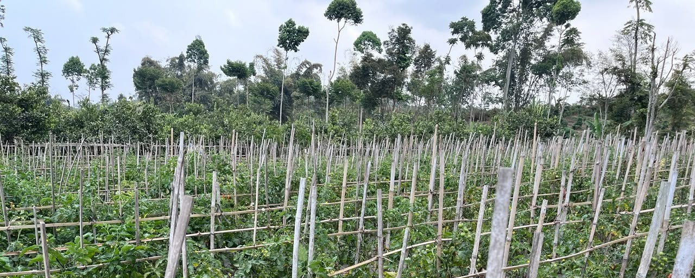
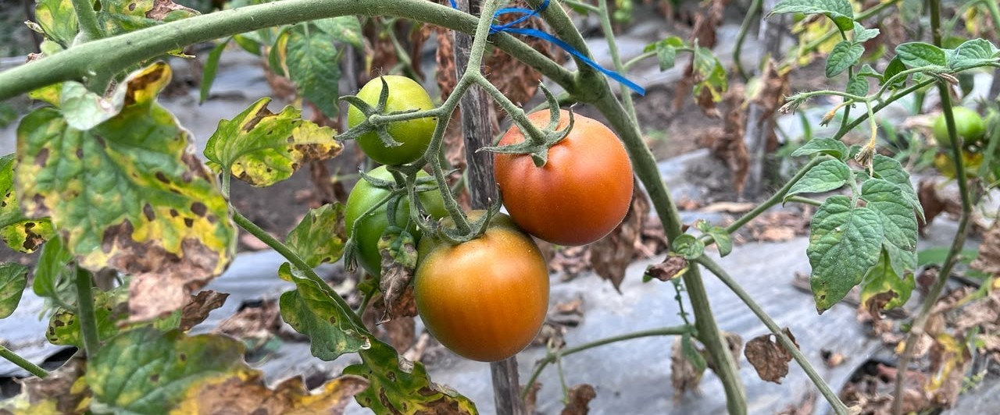
Tomat
PertanianSektor pertanian di Desa Sumberejo didukung oleh budidaya komoditas Tomat Serpo (Sirpo) yang dikelola secara mandiri oleh petani lokal seperti Pak Aziz. Menggunakan sekitar 3.500 bibit untuk lahan dua pak, tanaman tomat sayur ini membutuhkan masa tanam hingga panen selama kurang lebih tiga bulan. Dalam proses perawatannya, petani menghadapi tantangan irigasi musim kemarau yang harus dilakukan secara manual dua hari sekali menggunakan jerigen sangkletan gendong akibat ketiadaan mesin pemompa air. Selain itu, pengendalian hama ulat membutuhkan biaya pestisida sekitar Rp200.000 per botol. Meskipun pemupukan kerap terkendala akibat keterbatasan modal, tanaman ini tetap mampu menghasilkan buah berukuran besar yang segar. Sistem pemasarannya bergantung penuh pada transaksi dengan tengkulak. Harga jual tomat sangat fluktuatif, berkisar dari harga terendah Rp1.000 per kilogram yang hanya menutup biaya kuli panen, hingga mencapai harga normal Rp6.000–Rp7.000 dan puncak harganya Rp15.000 per kilogram. Hasil panen segar ini kemudian didistribusikan ke pasar tradisional di wilayah Tumpang dan Wajak, sementara buah yang busuk langsung dibuang di area lahan.
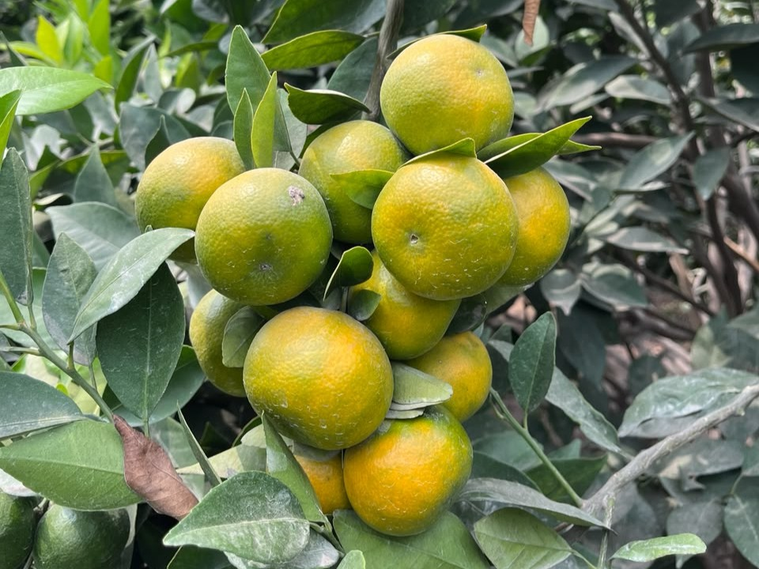
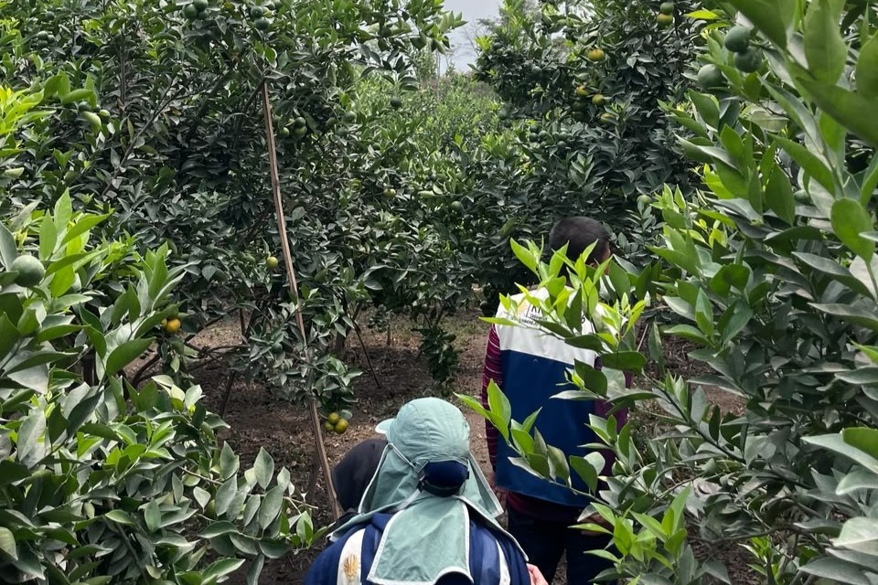
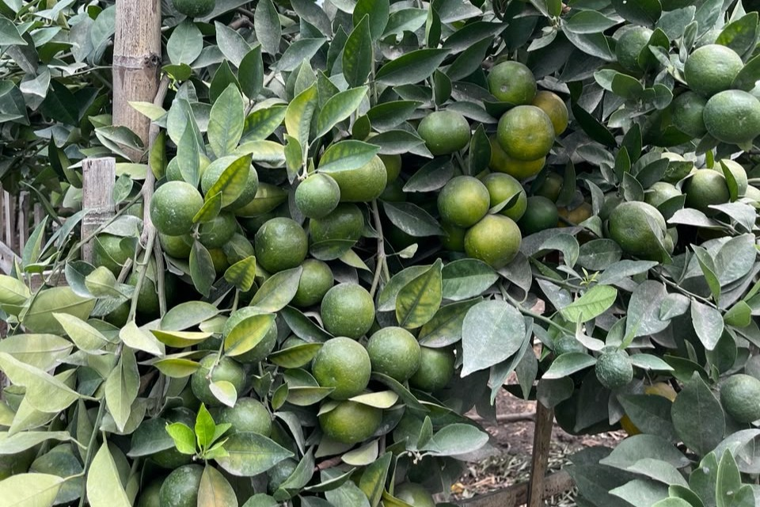
Jeruk
PertanianKomoditas hortikultura unggulan lainnya di Desa Sumberejo adalah Jeruk Siamadu (Siam Madu) yang dibudidayakan di area tegalan dan lereng perbukitan desa. Jeruk varietas ini sangat dikenal oleh masyarakat dengan cita rasanya yang manis segar serta kondisi fisik buah yang gemuk dan berkualitas tinggi. Kondisi iklim dan tanah lokal di Sumberejo dinilai sangat cocok, menjadikan kawasan ini mampu menghasilkan pertanaman jeruk Siamadu terbaik dibanding wilayah sekitarnya. Dari segi budidaya, tanaman jeruk memerlukan perawatan intensif serta pemupukan yang teratur dan berkesinambungan. Ketersediaan modal kerja yang memadai menjadi faktor penentu utama agar pohon jeruk dapat tumbuh subur dan berbuah secara maksimal. Berbeda dengan komoditas yang diolah terlebih dahulu, hasil panen jeruk dari para petani Sumberejo dipasarkan secara langsung dalam bentuk buah mentah segar. Transaksi penjualan biasanya dilakukan secara borongan di lokasi lahan atau melalui perantara tengkulak langganan. Buah jeruk unggulan ini secara konsisten didistribusikan untuk pasar lokal hingga dikirim dalam jumlah besar ke kota-kota luar daerah seperti Yogyakarta dan Surabaya.
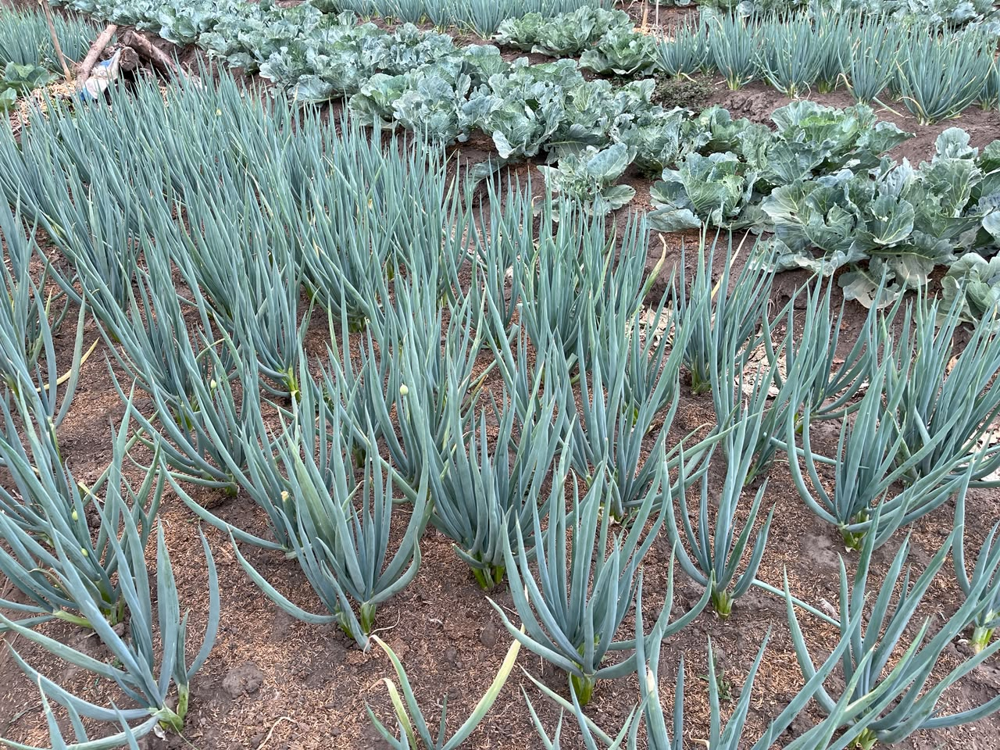
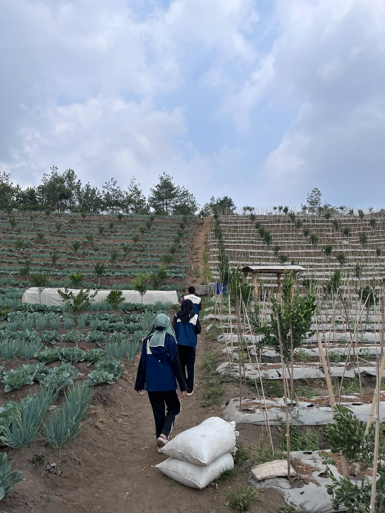
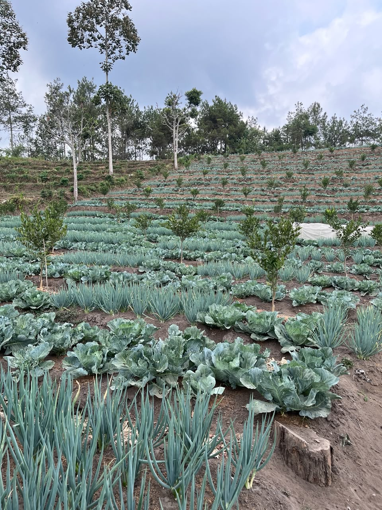
Bawang
PertanianPotensi komoditas hortikultura Desa Sumberejo juga didukung oleh budidaya Bawang Segon (daun bawang varietas Segon) yang ditanam di kawasan lereng perbukitan lahan warga. Komoditas ini memiliki ciri fisik daun berwarna hijau segar dan tumbuh dengan subur pada area tanah kemiringan desa. Dalam pola penanamannya, Bawang Segon sering kali dikombinasikan atau ditanam berselang-seling di sekitar lahan tanaman hortikultura lainnya. Perawatan komoditas ini terbilang praktis pada masa kemarau, namun menghadapi kendala yang cukup besar ketika memasuki musim penghujan. Curah hujan yang tinggi dan genangan air berlebih menjadi ancaman utama yang memicu risiko kebusukan daun serta kerusakan tanaman akibat kelebihan pasokan air. Pengelolaan pertanian dilakukan secara mandiri oleh petani tanpa adanya fasilitas subsidi pupuk atau bantuan khusus dari kelompok tani. Penjualan Bawang Segon umumnya memanfaatkan jalur perantara tengkulak yang datang membeli langsung di area lahan dengan kisaran harga penawaran Rp3.000 hingga Rp4.000 per kilogram. Dari lokasi panen, daun bawang segar ini selanjutnya disalurkan ke pasar-pasar tradisional di wilayah Wajak dan Tumpang untuk memenuhi kebutuhan bumbu konsumsi harian masyarakat.
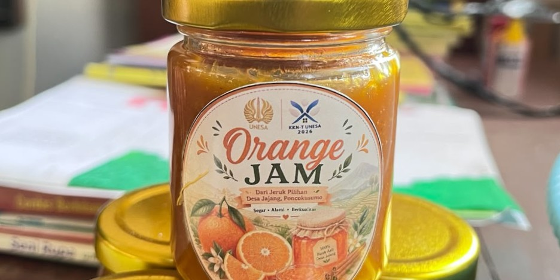
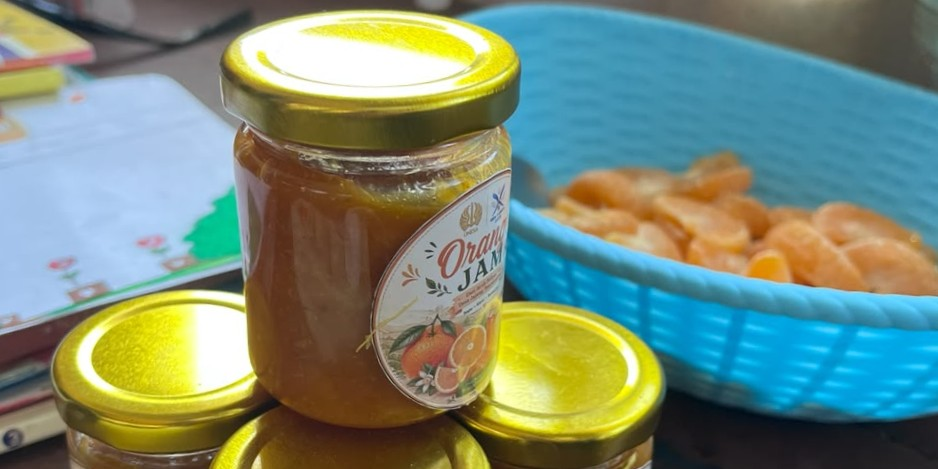
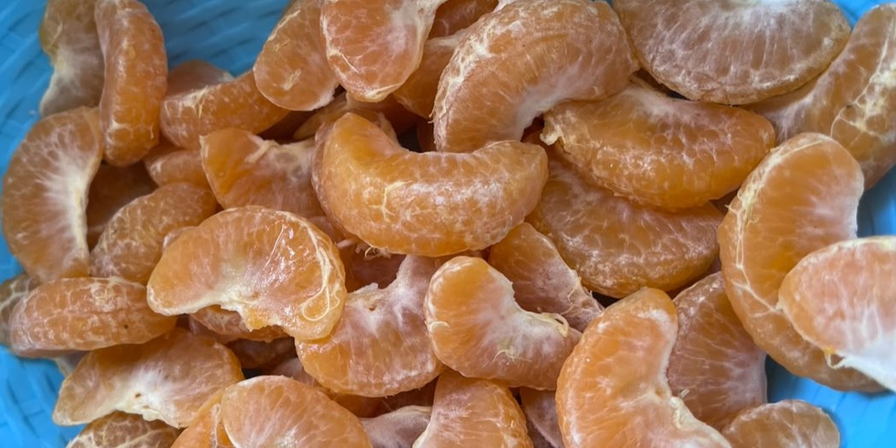
Selai Jeruk
OlahanDiversifikasi hasil pertanian jeruk di Dusun Jajang, Desa Sumberejo kini diwujudkan melalui produk olahan Selai Jeruk (Orange Jam). Inovasi bernilai tambah ini awalnya digagas oleh mahasiswa dan kini secara berkelanjutan diteruskan proses produksinya oleh warga lokal setempat, Mas Furry. Menggunakan bahan baku utama jeruk lokal segar pilihan, proses pembuatannya diawali dengan mengupas kulit jeruk serta membersihkan bagian serat putih secara teliti guna menghilangkan rasa pahit alami. Daging buah jeruk kemudian dipotong, dikeluarkan isinya, lalu dihaluskan menggunakan mesin chopper hingga bertekstur lembut. Selanjutnya, adonan buah dimasak di atas wajan dengan penambahan lima sendok makan gula pasir serta racikan kayu manis, lalu diaduk secara konsisten hingga mengental matang sempurna. Olahan pangan ini menghasilkan cita rasa manis-asam segar dengan aroma rempah kayu manis yang harum khas. Dikemas secara higienis dalam stoples kaca anggun (glass jar) berlabel rapi, selai jeruk ini siap dipasarkan sebagai produk suvenir kuliner unggulan. Pengembangan potensi skala produksi serta perluasan jalur pemasaran digital diharapkan mampu meningkatkan pendapatan ekonomi warga sekaligus memaksimalkan potensi melimpah hasil panen jeruk Desa Sumberejo.
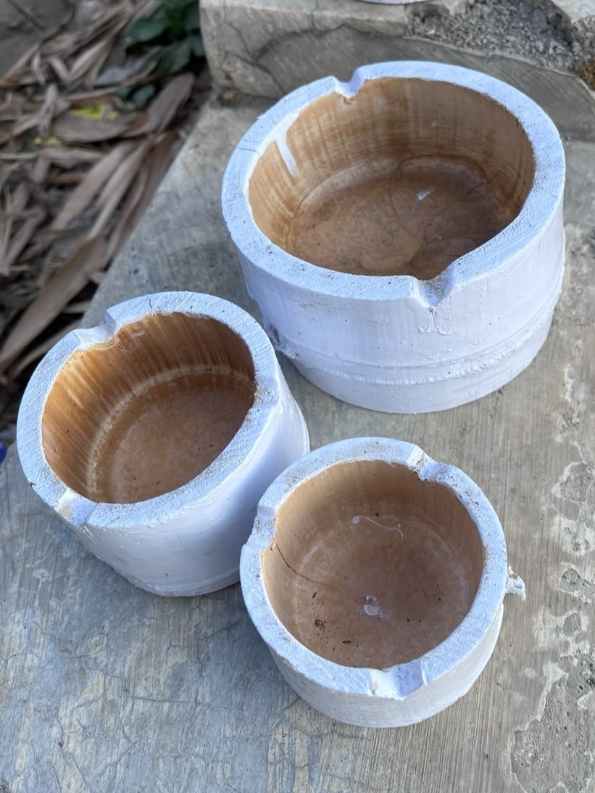
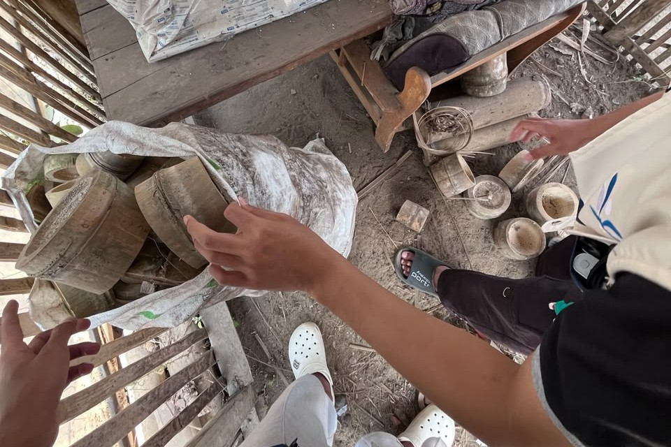
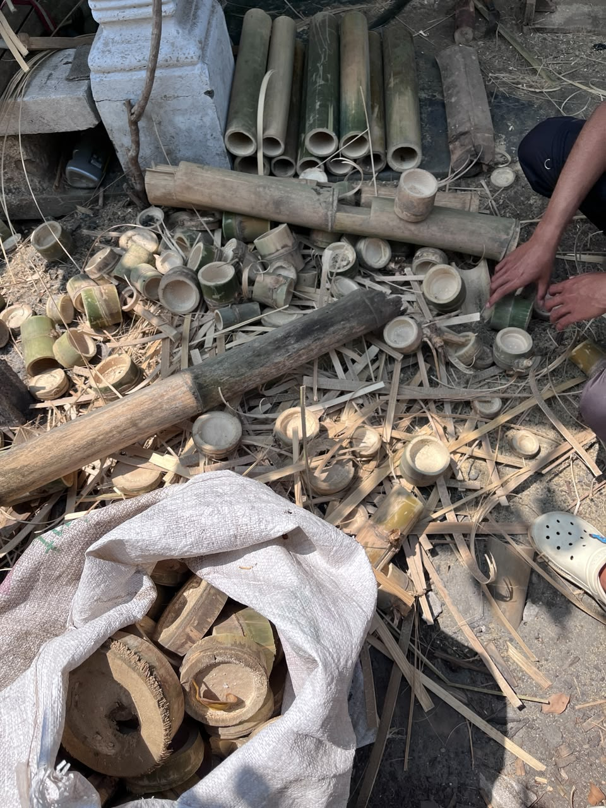
Asbak Bambu
KerajinanPemanfaatan limbah secara kreatif menjadi salah satu wujud kepedulian lingkungan sekaligus pemberdayaan ekonomi di Dusun Jajang, Desa Sumberejo. Melalui tangan terampil Bapak Jazuli, sisa potongan ruas Bambu Petung dari proses pembuatan tusuk sate yang biasanya hanya dibakar, kini berhasil didaur ulang menjadi kerajinan Asbak Bambu bernilai fungsional. Produk inovatif ini memanfaatkan bagian ruas atau bongkot bambu yang tebal dan kokoh sehingga memiliki daya tahan kuat. Dalam proses pembuatannya, potongan sisa bambu dirapikan bagian tepinya, dihaluskan, lalu diberi lekukan atau coakan khusus penahan rokok sebelum dilapis warna cat putih bersih untuk memberikan tampilan visual yang estetis. Kerajinan daur ulang ini diproduksi secara mandiri dan menjadi solusi efektif dalam mengurangi polusi asap akibat pembakaran limbah bambu di pemukiman. Selain ramah lingkungan, keunikan asbak ini terletak pada tekstur serat alami bambu yang khas. Dengan wilayah pemasaran yang mencakup pembeli lokal dan wisatawan, komoditas ini memiliki potensi besar untuk dikembangkan lebih luas sebagai suvenir unik kriya khas Desa Sumberejo. Pengembangan pemasaran digital dan diversifikasi varian warna dapat menjadi peluang strategis usaha ke depan.
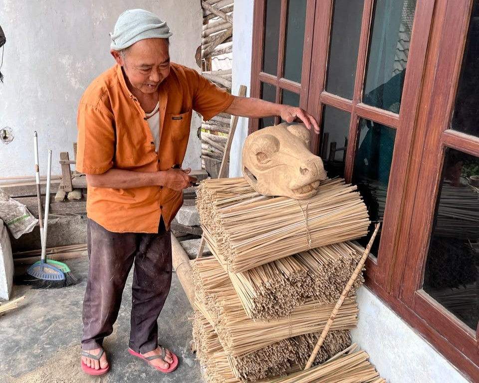
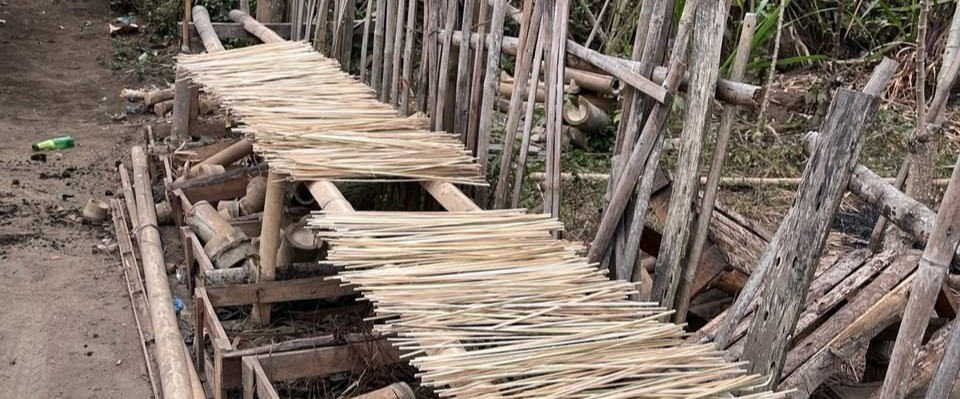
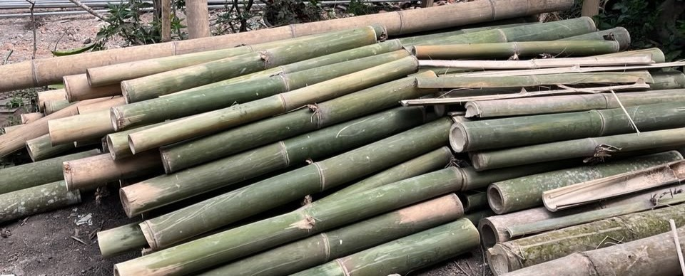
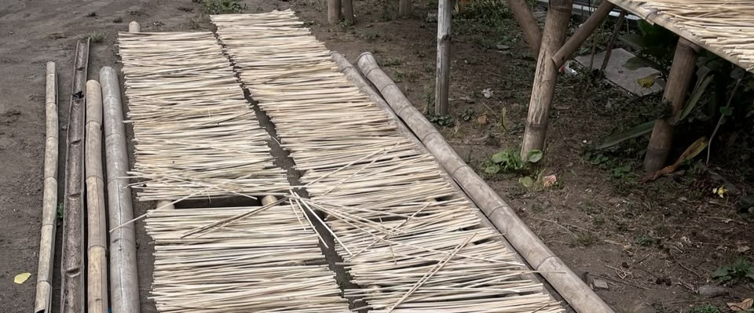
Tusuk Sate
KerajinanIndustri kerajinan tusuk sate di Desa Sumberejo digerakkan oleh perajin mandiri seperti Bapak Jazuli yang konsisten mempertahankan proses pembuatan tradisional secara teliti. Berbeda dari produk kriya bambu pada umumnya, usaha ini menggunakan bahan baku utama Bambu Petung pilihan, di mana satu batang bambu dapat menghasilkan sekitar 1.000 tusuk. Setiap bagian bambu diolah dan diserut secara manual hingga mencapai ketebalan presisi sekitar 1 mm. Tahap berikutnya adalah penjemuran di bawah sinar matahari hingga kering sempurna guna membuang serabut serta menjaga keawetan bambu. Dikerjakan secara independen sejak pagi hari, kapasitas produksi harian mampu mencapai 4.000 hingga 5.000 tusuk sate maupun tusuk cilok. Seluruh hasil produksi dikemas rapi dalam ikatan berkapasitas 1.000 tusuk. Terdapat tiga varian ukuran utama, yaitu 46 cm seharga Rp10.000, 38 cm seharga Rp6.000, serta ukuran 25 cm seharga Rp20.000 per ikat. Pemasaran hasil kerajinan ini berjalan secara berkelanjutan melalui skema pengiriman langsung ke pengepul lokal di wilayah setempat setiap kali kuota produksi harian telah terpenuhi. Keberadaan usaha ini memperkuat rantai pasok ekonomi kriya lokal sekaligus menjaga potensi kerajinan bambu tradisional Desa Sumberejo.
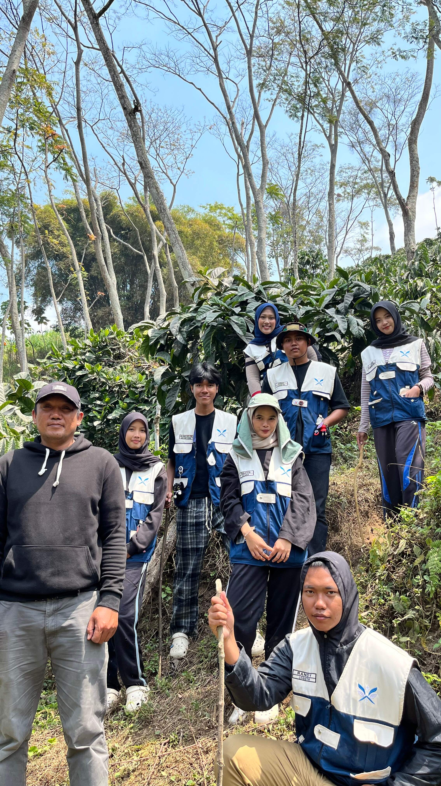
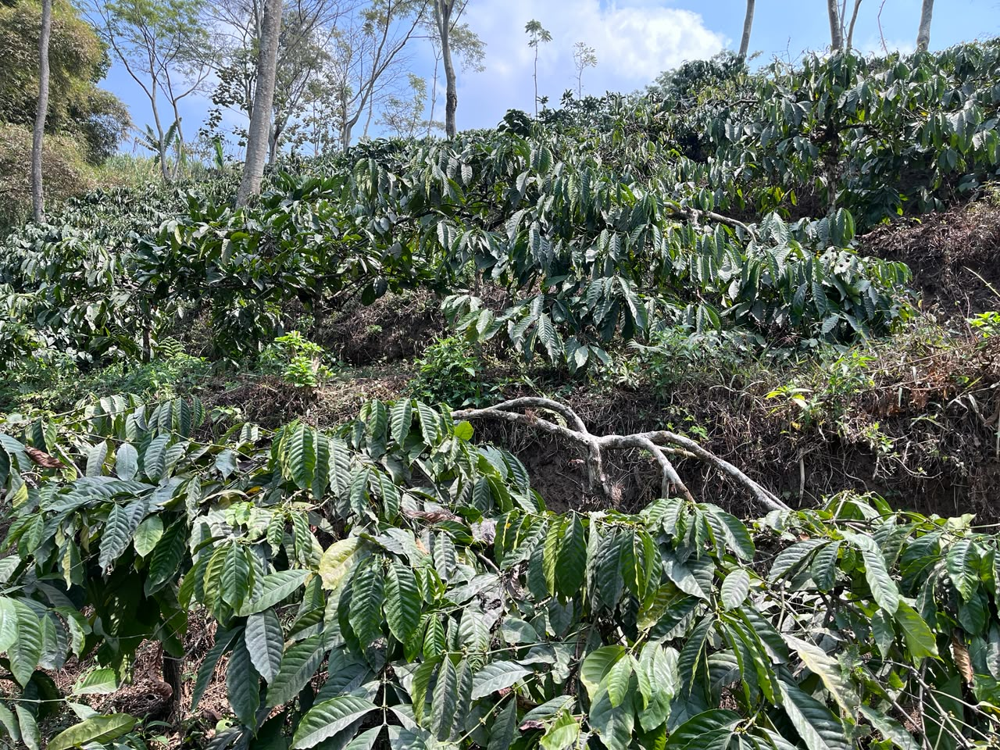
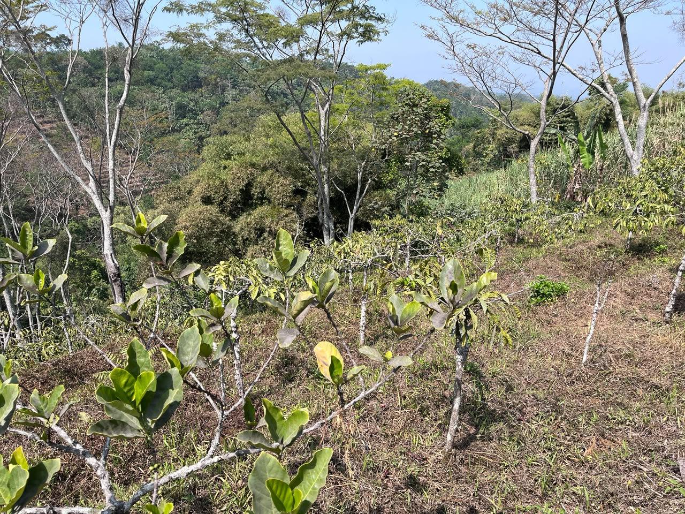
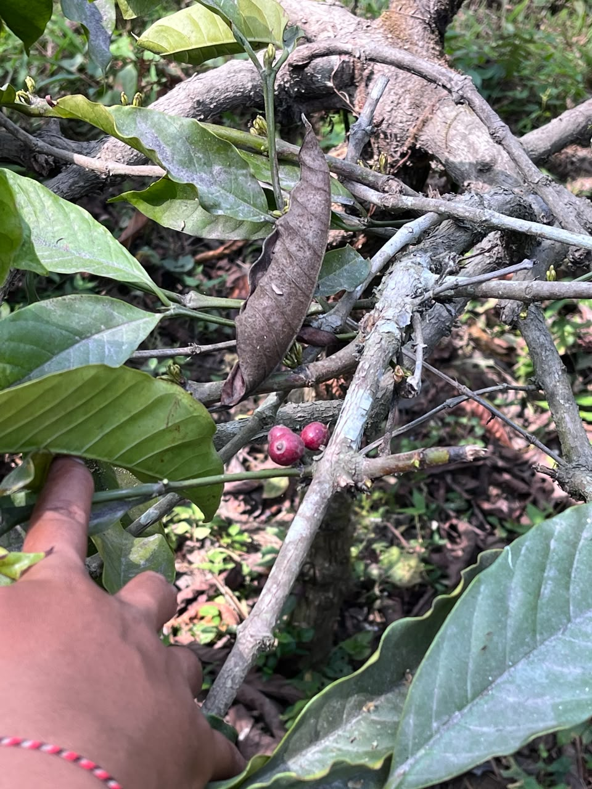
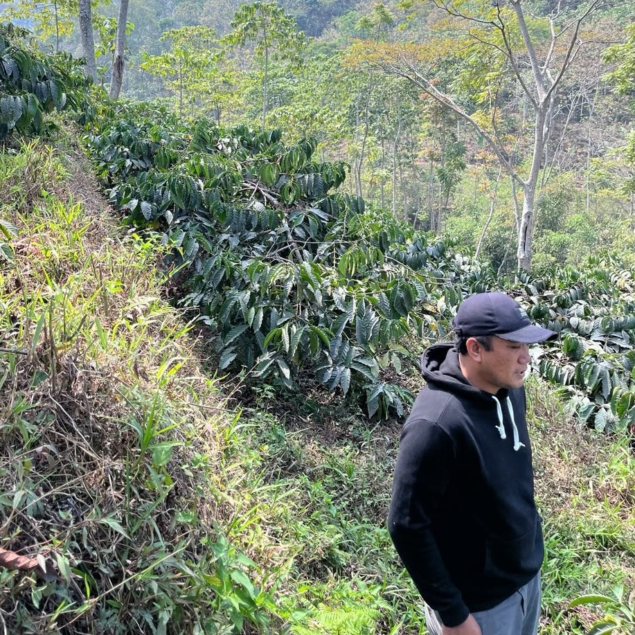
Kopi
PertanianPerkebunan kopi Robusta milik Mas Deni menjadi salah satu potensi komoditas pertanian unggulan di Desa Sumberejo yang dikembangkan di atas lahan seluas 12 hektar. Usaha budidaya kopi ini telah berjalan selama kurang lebih delapan tahun sejak 2018, dengan memanfaatkan tingkat kesuburan tanah setempat dan tingginya curah musim hujan yang mendukung pertumbuhan tanaman secara optimal. Berawal dari penanaman bibit secara mandiri, tanaman kopi Robusta di wilayah ini sudah mulai dapat dipanen saat memasuki usia 2,5 tahun. Musim panen berlangsung satu kali dalam setahun, di mana pemetikan dilakukan secara berkala setiap seminggu sekali dengan hanya memilih biji kopi yang telah berwarna merah matang. Dalam satu kali periode petik, perkebunan ini mampu menghasilkan sekitar 4 hingga 5 sak biji kopi. Mutu produk terjaga melalui proses penjemuran alami serta pengolahan pascapanen yang cermat guna meminimalkan kadar air dan mempertahankan aroma alaminya. Hasil panen komoditas kopi Robusta ini selanjutnya dipasarkan dengan kisaran harga Rp50.000 hingga Rp70.000 per kilogram, baik untuk konsumsi lokal maupun memenuhi permintaan kedai kopi di daerah sekitar.
Wonokerto
Dikenal sebagai sentra produk kerajinan kayu di Desa Sumberejo.
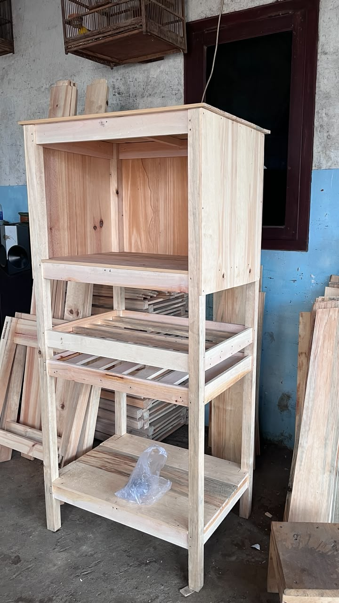
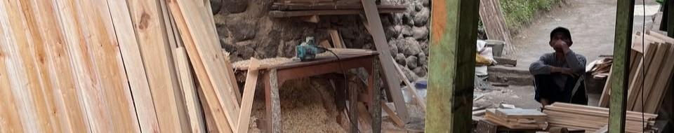
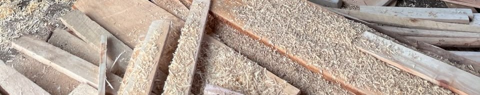
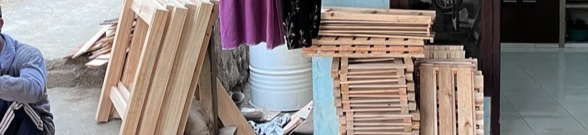
Mebel Kayu
KerajinanUsaha kriya mebel kayu milik Bapak Sudar di wilayah Wonokerto digerakkan oleh pengerjaan pertukangan kayu lokal secara konsisten. Menggunakan bahan baku utama kayu sengon pilihan serta varian kayu mahoni untuk struktur yang lebih keras, Pak Sudar memfokuskan produksinya pada pengerjaan meja kayu berukuran standar 80 x 40 cm. Setiap meja dikerjakan secara cermat dengan proses pemolesan akhir berupa finishing plitur agar permukaan kayu tampak halus dan mengkilap. Kualitas meja buatan Pak Sudar dikenal rapi dan fungsional untuk berbagai kebutuhan rumah tangga maupun fasilitas sekolah. Dalam satu siklus pengerjaan, kapasitas produksi berkisar antara 2 hingga 10 unit meja dengan durasi pengerjaan paling lama satu minggu. Ongkos pengerjaan per unit meja dipatok sebesar Rp15.000, sedangkan harga jual produk pesanan jadi berkisar antara Rp35.000 hingga Rp40.000 per unit. Sistem produksi mebel ini sepenuhnya berbasis pesanan kustom. Pengrajin sangat terbuka untuk membuat produk baru sesuai permintaan maupun spesifikasi khusus dari pembeli. Hasil kerajinan mebel kayu ini dipasarkan langsung dari tempat produksi di Wonokerto serta dilayani untuk pemesanan keliling.
Aran-Aran
Salah satu dusun penghasil tusuk sate di Desa Sumberejo.
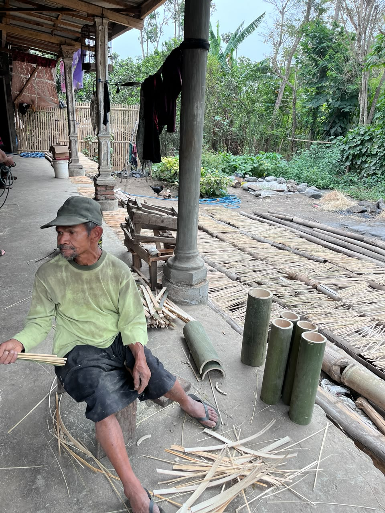
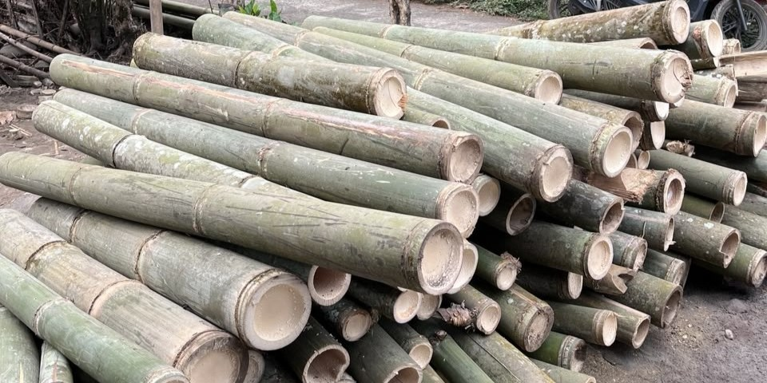
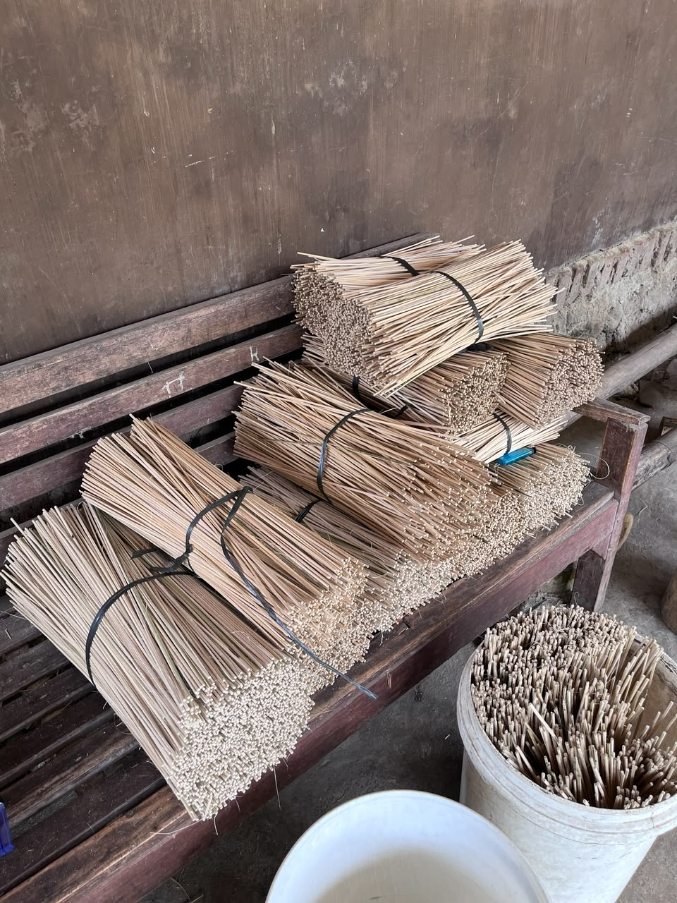
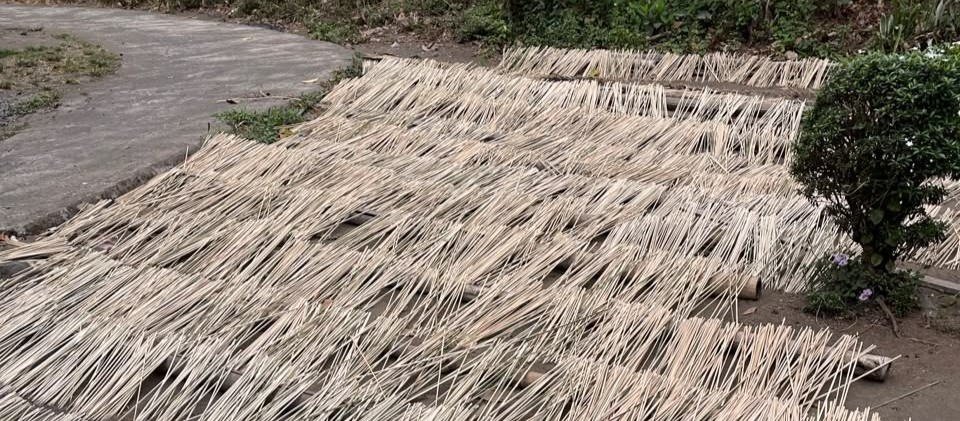
Tusuk Sate
KerajinanDusun Aran-Aran di wilayah Desa Sumberejo memiliki potensi komoditas unggulan berupa industri kerajinan pembuatan tusuk sate bambu yang digerakkan secara mandiri oleh warga lokal, salah satunya Ibu Asrifah sejak tahun 2009. Usaha kerajinan ini memanfaatkan bahan baku utama berupa bambu tua pilihan, seperti bambu apus dan petung, yang diperoleh langsung dari tegalan di sekitar wilayah desa. Proses produksi dilakukan secara teliti memadukan teknik pemotongan manual dan penggunaan mesin serut listrik untuk menghasilkan serutan bambu yang halus dan presisi. Jenis produk yang dihasilkan sangat beragam, mencakup berbagai ukuran tusuk sate mulai dari 25 cm hingga 58 cm untuk kebutuhan sate kambing, sate ayam, serta tusuk jajanan seperti sempol dan cilok. Sistem kerja harian meliputi tahapan pencacahan, penjemuran di bawah terik matahari hingga benar-benar kering agar tidak berjamur, serta pemrosesan akhir dengan mesin serut. Dalam satu minggu, produksi rumah tangga ini mampu menghasilkan puluhan ikat serutan bambu berkualitas tinggi. Hasil kerajinan bambu dari Dusun Aran-Aran ini disetorkan secara rutin setiap minggu ke pabrik pengepul serta dipasarkan langsung kepada para pedagang kuliner lokal.
Krajan
Dusun pusat pemerintahan desa, juga memproduksi tusuk sate.
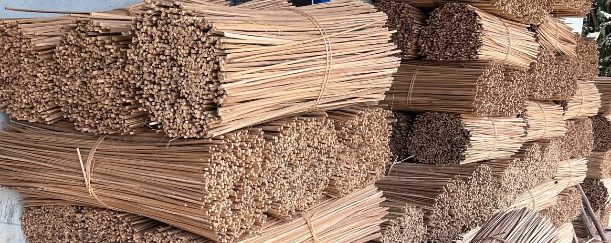
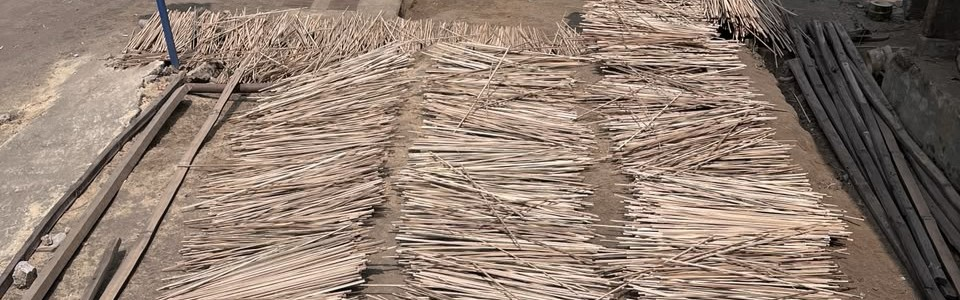
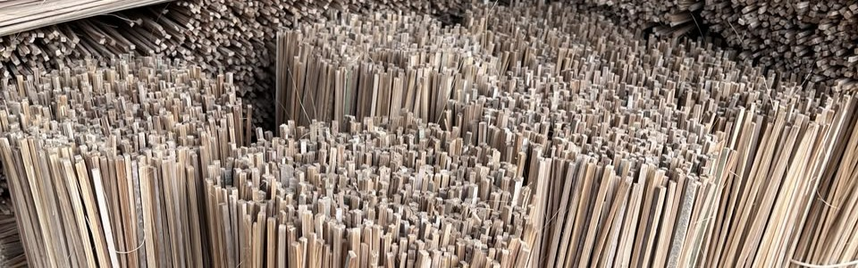
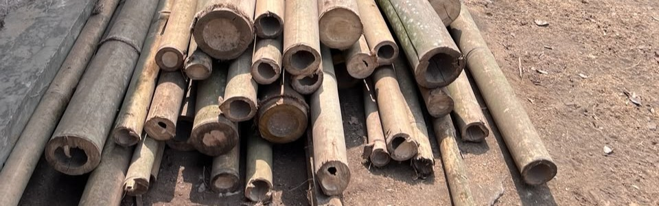
Tusuk Sate
KerajinanSentra industri UMKM kerajinan tusuk sate bambu di Desa Sumberejo, khususnya terpusat di Dusun Krajan dan Sumber Dewo, digerakkan secara produktif oleh warga lokal sebagai penopang ekonomi penting di samping sektor pertanian. Menggunakan bahan baku utama bambu biasa, proses pemotongan dan pencacahan dilakukan secara mandiri memanfaatkan mesin cacah rakitan keluarga maupun bilah pisau manual. Aktivitas ini umumnya dikerjakan pada sore hari sebagai usaha cadangan usai warga bekerja sebagai buruh tani. Batang bambu diolah menjadi potongan mentah (cacahan), lalu dijemur di bawah sinar matahari selama dua hari, atau dipanggang di tungku dapur jika cuaca berawan. Hasil cacahan kering diikat rapi dalam satuan gendel berukuran 33 cm, 43 cm, 50 cm, hingga 55 cm, dengan harga berkisar Rp10.000 hingga Rp12.000 per ikatan. Kapasitas produksi per rumah tangga mampu mencapai 10 gendel per hari atau sekitar 100 gendel per minggu. Produk cacahan mentah ini mayoritas diambil oleh tengkulak untuk menjalani tahap penghalusan (serut) dan pembentukan akhir sebelum dipasarkan. Meski demikian, para pengrajin juga sangat terbuka melayani pesanan langsung dari pembeli luar secara mandiri.
Sumberdewo
Menggabungkan hasil pertanian, kerajinan, dan peternakan sebagai komoditas utama.
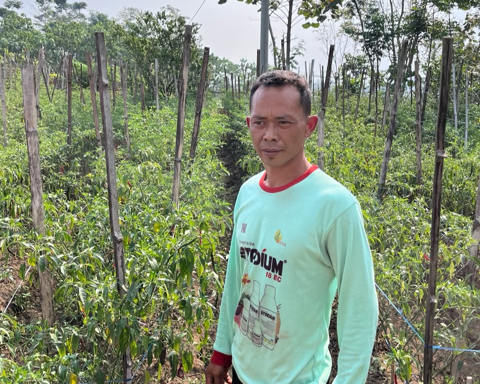
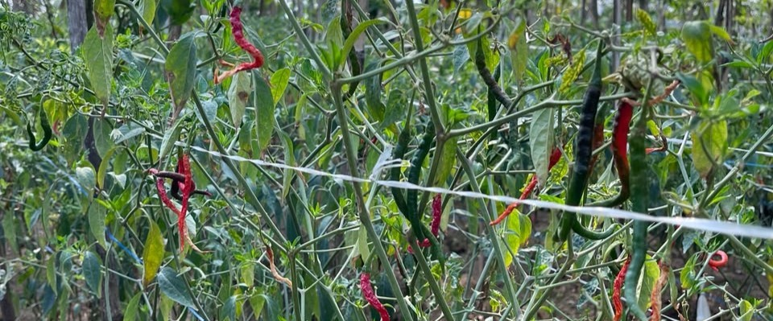
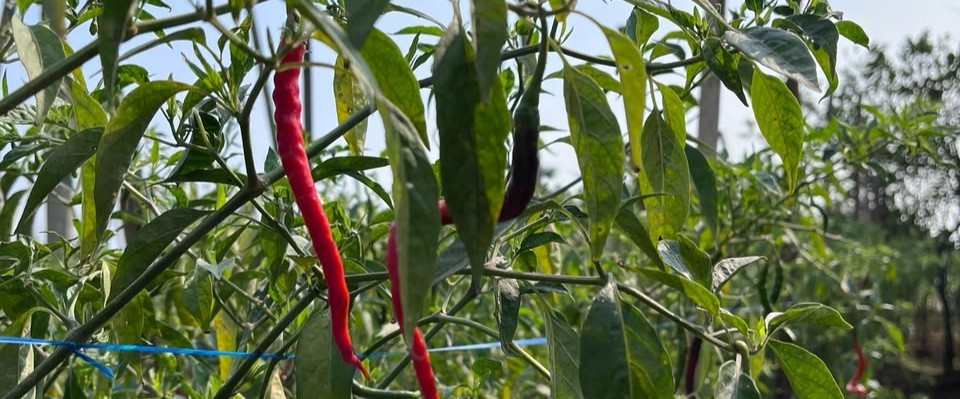
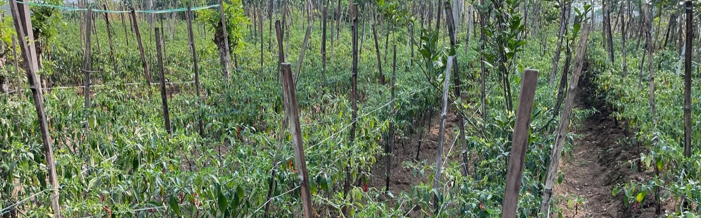
Cabai
PertanianSektor pertanian di Dusun Sumber Dewo, Desa Sumberejo, didorong oleh budidaya cabai merah keriting (CMK) berkualitas tinggi yang dikelola secara mandiri oleh Bapak Utomo. Berbekal pengalaman bertani selama dua tahun, beliau mengelola lahan seluas 1.700 meter persegi yang ditanami sekitar 6.000 batang pohon cabai secara swadaya. Proses perawatan tanaman ini mengandalkan pemupukan alami berbasis pupuk kandang kotoran ayam serta bibit unggul yang dibeli secara mandiri. Cabai merah keriting Sumber Dewo memiliki masa tanam relatif singkat sekitar 2,5 bulan hingga panen awal, menghasilkan cabai bertekstur baik dengan tingkat kepedasan yang lebih unggul dibanding varietas sejenis. Hasil panen berkisar antara 10 hingga 40 kilogram per siklus petik, dengan klasifikasi mutu Grade A, B, dan C. Meski menghadapi kendala musiman seperti serangan hama dan penyakit tanaman, produksi pertanian cabai ini tetap berjalan secara konsisten. Hasil panen dipasarkan dalam satuan kilogram melalui sistem tengkulak atau agen lokal untuk memenuhi pasokan pasar wilayah Wajak hingga Jakarta. Produk pertanian ini dijual dengan harga rata-rata Rp20.000 per kilogram, yang disesuaikan saat terjadi fluktuasi pasar.
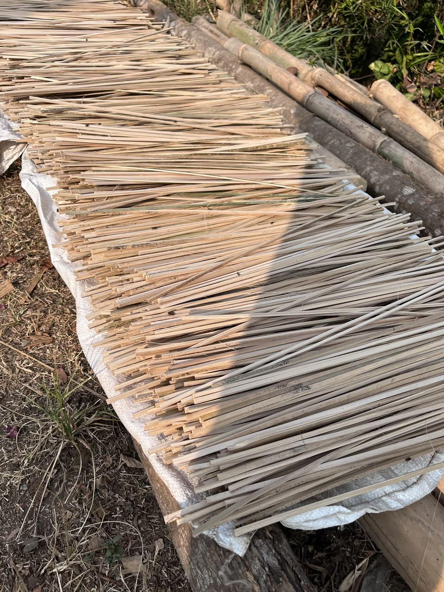
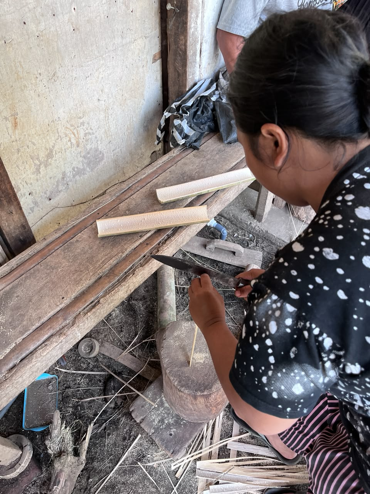
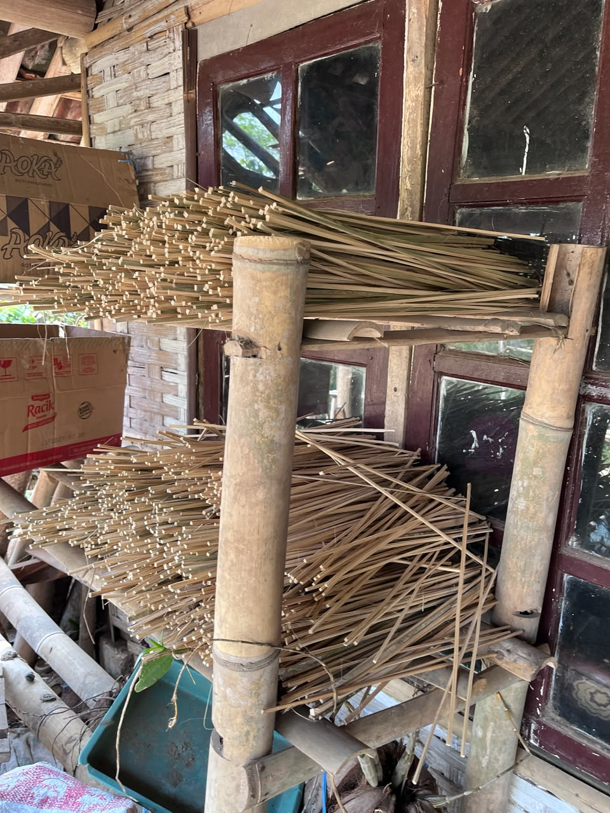
Tusuk Sate
KerajinanKegiatan produksi tusuk sate bambu di Desa Sumberejo digerakkan oleh para pengrajin lokal, termasuk Muhammad Alif, yang ditekuni secara konsisten. Komoditas ini memanfaatkan bahan baku utama Bambu Petung (Pring Petung) berukuran besar serta Bambu Rampal yang terkenal lebih padat, tebal, dan bernilai jual tinggi. Proses manufakturnya diawali dengan pemotongan bambu, dilanjutkan penyerutan hingga membentuk batang bundar yang halus dan presisi. Saat musim hujan tiba, pengrajin mengantisipasi risiko jamur dengan menerapkan teknik pengeringan khusus berupa pemanggangan di atas perapian agar bambu tetap hangat dan bebas bercak hitam. Produk tusuk sate yang dihasilkan memiliki beragam variasi panjang, seperti 35 cm, 38 cm, 45 cm, hingga 58 cm. Untuk efisiensi, pengikatan tidak dilakukan dengan menghitung satu per satu, melainkan menggunakan takaran ikatan khusus dengan estimasi kapasitas 1.000 biji per ikat. Produk ukuran 58 cm dari Bambu Petung dipatok seharga Rp12.000 per ikat. Pemasaran produk dilakukan melalui penjualan per ikat maupun sistem timbangan kiloan yang disalurkan ke pengepul besar dan pasar lokal untuk memenuhi kebutuhan usaha kuliner.
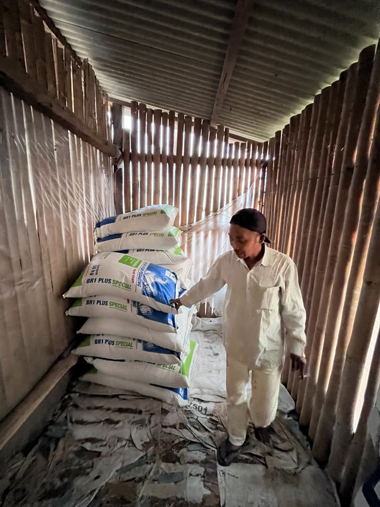
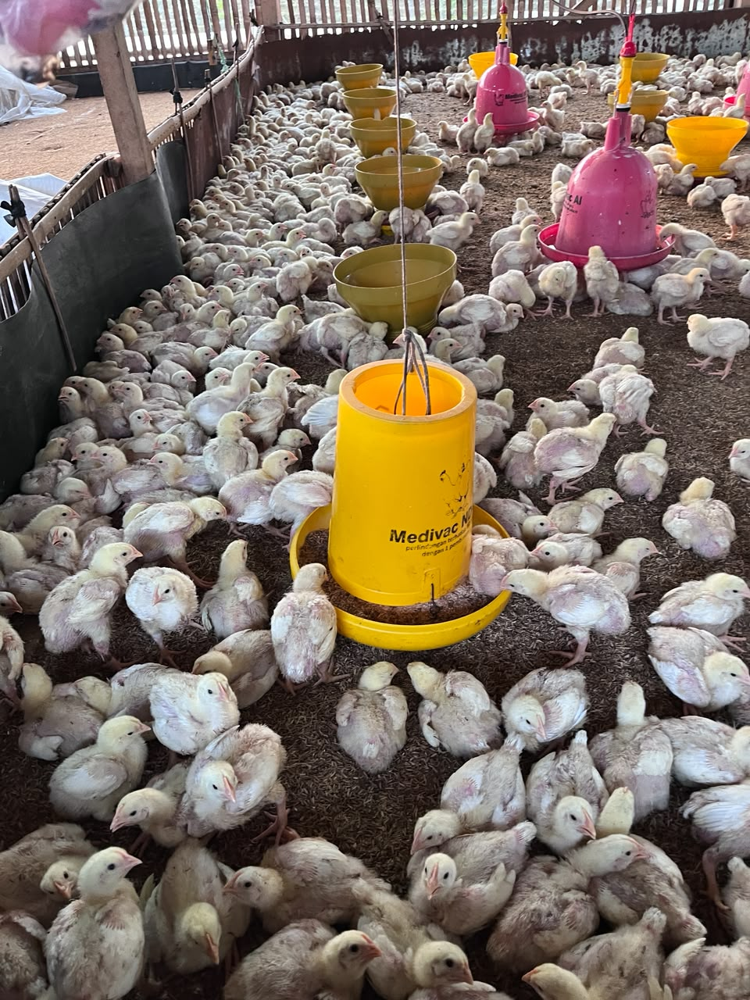
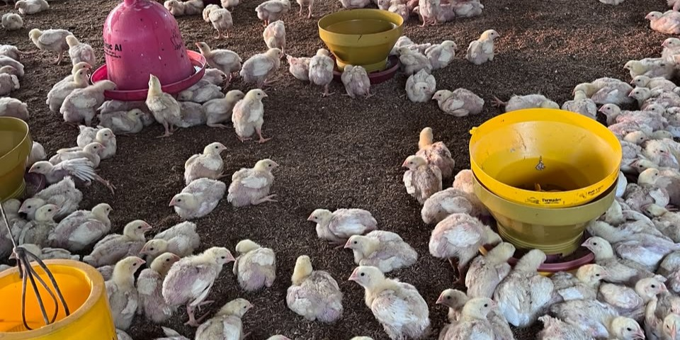
Ayam Potong
PeternakanPotensi komoditas peternakan di Dusun Sumber Dewo, Desa Sumberejo, digerakkan oleh Pak Ahmad Subeki melalui usaha peternakan ayam potong (broiler) dengan sistem semi-mandiri. Berbeda dari sistem kemitraan yang memanen ayam pada umur 35 hari dengan bobot 20–22 ons (2–2,2 kg), Pak Subeki mengelola peternakan secara mandiri dengan masa pemeliharaan minimal 40 hari. Langkah ini bertujuan mengejar bobot ayam yang lebih besar, yaitu minimal 25 ons (2,5 kg) hingga lebih dari 3 kg per ekor, guna memenuhi spesifikasi khusus pasar lokal seperti pedagang bakso, warung sate, dan jagal kampung. Dengan populasi sekitar 4.000 ekor per periode dan tingkat kematian maksimal 200–300 ekor, peternakan ini mampu menghasilkan pasokan sekitar 3.700 ekor atau setara 10 hingga 15 ton daging ayam per siklus panen. Efisiensi biaya operasional dijaga melalui penggunaan bibit DOC Grade A serta kombinasi pakan starter dan pelet yang memiliki selisih harga Rp30.000–Rp40.000 per sak. Hasil panen disalurkan melalui mitra broker ke pasar tradisional di wilayah Wajak, Turen, Dampit, Bululawang, hingga Rumah Potong Ayam (RPA) Surabaya.